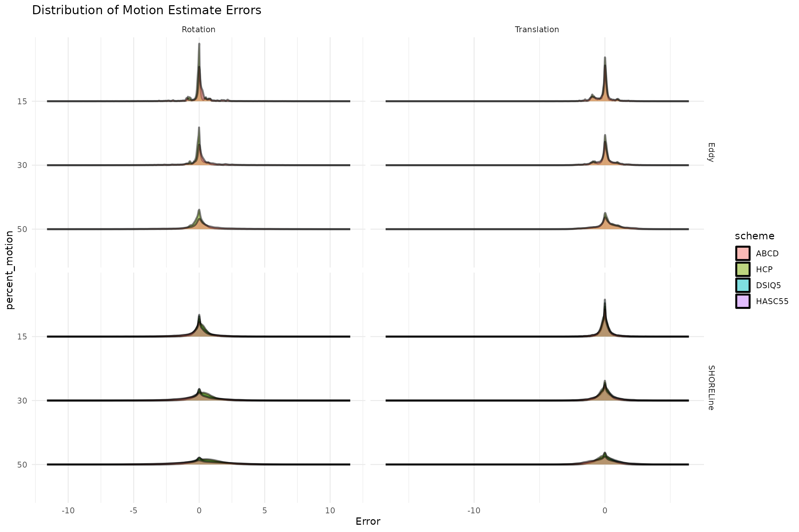
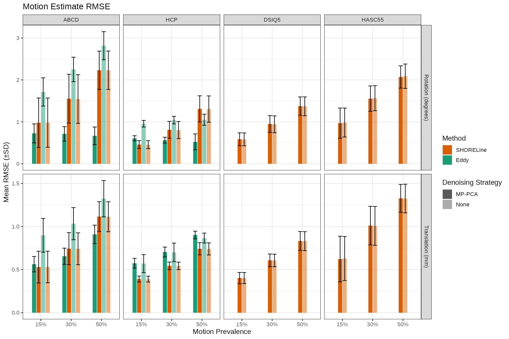
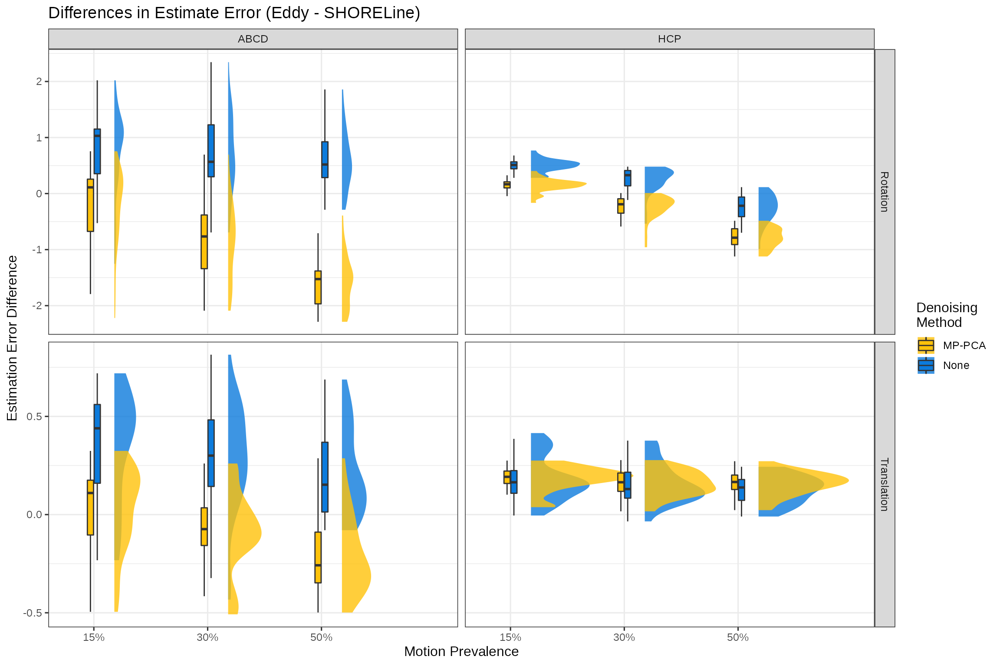

Head Motion Benchmark
2022-06-10
dmri_hmc_benchmark.RmdIntroduction
In this project, we used FiberFox to simulate entire dMRI series for ABCD, HCP, DSIQ5, and HASC55 data. Head motion was then introduced by applying rigid transforms to the streamline data (translations and rotations). Then, QSIPrep used both SHORELine and Eddy to estimate the introduced head motion — analysis of these results are evaluated in this notebook.
Libraries & Setup
The data are available on OSF at this link. This package internally downloads and cleans them for your convenience. They’re available preprocessed within the package:
Sample
The table below shows the number of b0’s for each scheme:
# QUESTION the Num b > 1 seem to be slightly higher and lower than table 1
motion_df %>%
filter(
iternum == 1 &
method == "SHORELine" &
denoising == "none" &
bval > 100 &
setting == "Affine") %>%
group_by(percent_motion, scheme) %>%
summarise(max_b = max(bval),
num_b = n()) %>%
ungroup() %>%
distinct(scheme, max_b, num_b) %>%
t() %>%
row_to_names(1) %>%
data.frame() %>%
add_row(ABCD = "Shelled", HCP = "Shelled", DSIQ5 = "Cartesian", HASC55 = "Random", .before = 1) -> tab1## `summarise()` has grouped output by 'percent_motion'. You can override using
## the `.groups` argument.
rownames(tab1) <- c("Type", "Max. b", "Num. b > 0")
gt(tab1, rownames_to_stub = TRUE) %>%
tab_header("Scheme properties and processing pipeline runs") %>%
opt_table_font("Times New Roman")| Scheme properties and processing pipeline runs | ||||
|---|---|---|---|---|
| ABCD | DSIQ5 | HASC55 | HCP | |
| Type | Shelled | Cartesian | Random | Shelled |
| Max. b | 3000 | 4985 | 5015 | 3010 |
| Num. b > 0 | 96 | 257 | 55 | 270 |
Below is a breakdown of how the runs were accumulated:
motion_df %>%
filter(volnum == 0) %>%
select(Algorithm = method, Model = setting, Denoising = denoising, percent_motion, scheme) %>%
group_by_all() %>%
summarise(n = n()) %>%
pivot_wider(names_from = scheme, values_from = n) %>%
ungroup() %>%
mutate(across(where(is.numeric), ~ ifelse(is.na(.), 0, .))) %>%
mutate(Denoising = ifelse(Denoising == "none", "None", "MP-PCA")) %>%
mutate(percent_motion = paste0(as.character(percent_motion), " %")) %>%
# insert empty string for tidyness
mutate(across(where(is.factor), as.character)) %>%
group_by(Algorithm, Model, Denoising) %>%
mutate_at(vars(Algorithm:Denoising), ~ replace(.x, duplicated(.x), "")) %>%
ungroup() %>%
select(-Algorithm) %>%
gt() %>%
tab_spanner("# Pipeline Runs", columns = ABCD:HASC55) %>%
cols_align(align = "right", columns = percent_motion:HASC55) %>%
tab_row_group(
label = "Eddy",
rows = 1:12
) %>%
tab_row_group(
label = "SHORELine",
rows = 13:24
) %>%
opt_table_font("Times New Roman")## `summarise()` has grouped output by 'Algorithm', 'Model', 'Denoising',
## 'percent_motion'. You can override using the `.groups` argument.| Model | Denoising | percent_motion | # Pipeline Runs | |||
|---|---|---|---|---|---|---|
| ABCD | HCP | DSIQ5 | HASC55 | |||
| SHORELine | ||||||
| Affine | MP-PCA | 15 % | 30 | 30 | 30 | 30 |
| 30 % | 30 | 30 | 30 | 30 | ||
| 50 % | 30 | 30 | 30 | 30 | ||
| Affine | None | 15 % | 30 | 30 | 30 | 30 |
| 30 % | 30 | 30 | 30 | 30 | ||
| 50 % | 30 | 30 | 30 | 30 | ||
| Rigid | MP-PCA | 15 % | 30 | 30 | 30 | 30 |
| 30 % | 30 | 30 | 30 | 30 | ||
| 50 % | 30 | 30 | 30 | 30 | ||
| Rigid | None | 15 % | 30 | 30 | 30 | 30 |
| 30 % | 30 | 30 | 30 | 30 | ||
| 50 % | 30 | 30 | 30 | 30 | ||
| Eddy | ||||||
| Linear | MP-PCA | 15 % | 30 | 30 | 0 | 0 |
| 30 % | 30 | 30 | 0 | 0 | ||
| 50 % | 30 | 30 | 0 | 0 | ||
| Linear | None | 15 % | 30 | 30 | 0 | 0 |
| 30 % | 30 | 30 | 0 | 0 | ||
| 50 % | 30 | 30 | 0 | 0 | ||
| Quadratic | MP-PCA | 15 % | 30 | 30 | 0 | 0 |
| 30 % | 30 | 30 | 0 | 0 | ||
| 50 % | 30 | 30 | 0 | 0 | ||
| Quadratic | None | 15 % | 30 | 30 | 0 | 0 |
| 30 % | 30 | 30 | 0 | 0 | ||
| 50 % | 30 | 30 | 0 | 0 | ||
And finally the total scans and volumes:
motion_df %>%
filter(volnum == 0) %>%
select(Algorithm = method, Model = setting, Denoising = denoising, percent_motion, scheme) %>%
group_by_all() %>%
summarise(n = n()) %>%
pivot_wider(names_from = scheme, values_from = n) %>%
ungroup() %>%
mutate(across(where(is.numeric), ~ ifelse(is.na(.), 0, .))) %>%
mutate(Denoising = ifelse(Denoising == "none", "None", "MP-PCA")) %>%
mutate(percent_motion = paste0(as.character(percent_motion), " %")) %>%
group_by(Algorithm) %>%
summarise(across(ABCD:HASC55,sum)) %>%
gt() %>%
tab_header("Total Scans") %>%
opt_table_font("Times New Roman")## `summarise()` has grouped output by 'Algorithm', 'Model', 'Denoising',
## 'percent_motion'. You can override using the `.groups` argument.| Total Scans | ||||
|---|---|---|---|---|
| Algorithm | ABCD | HCP | DSIQ5 | HASC55 |
| Eddy | 360 | 360 | 0 | 0 |
| SHORELine | 360 | 360 | 360 | 360 |
motion_df %>%
filter(bval > 0) %>%
select(Algorithm = method, Model = setting, Denoising = denoising, percent_motion, scheme) %>%
group_by(scheme) %>%
summarise(`Total b > 0 Volumes` = n()) %>%
t() %>%
row_to_names(1) %>%
data.frame() %>%
gt(rownames_to_stub = TRUE) %>%
opt_table_font("Times New Roman")| ABCD | DSIQ5 | HASC55 | HCP | |
|---|---|---|---|---|
| Total b > 0 Volumes | 69120 | 92520 | 19800 | 194400 |
Note that errors for rotation are converted from radians to degrees, and we also extract only the \(b > 0\) volumes. Both Eddy and SHORELine use different methods (non-GP and non-SHORE) for motion-correcting these images.
Motion Analysis
1. Is there an RMSE difference between the Rigid/Affine and Linear/Quadratic settings?
We tested Rigid and Affine transformation models for SHORELine and Linear and Quadratic models in Eddy. In Eddy, the models only affect Eddy current correction so we shouldn’t see a difference in head motion estimates. SHORELine may or may not benefit from having more degrees of freedom in the transformation model.
Here we test whether there are significant effects of transformation model. Under the hood R will pair the same scans and perform a paired t-test by subtracting alphabetically. For SHORELine this means Affine - Rigid and for Eddy it means Linear - Quadratic.
# TODO put these long functions into a function
# TODO times new roman in the header and stub
setting_tests <- error_rmse_wsetting %>%
rename(hmc_method=method) %>%
group_by(denoising, scheme, motion.type, hmc_method, percent_motion) %>%
do(test = tidy(t.test(rmse ~ setting, data=., paired=TRUE))) %>%
unnest(test)
# Adjust the p-values and order them by the largest absolute effects
setting_tests_adj <- setting_tests %>%
select(!c(parameter, method, alternative)) %>%
pivot_wider(
names_from = motion.type,
values_from = c(estimate:conf.high)
) %>%
# p adjust any pvalues
mutate(
across(
contains("p.value"),
~p.adjust(.x),
.names = "Adjusted_{.col}"
)
) %>%
# filter sig pvals
# no eddy rows should get through this filter
filter(if_any(contains("Adjusted"), ~.x < 0.01))
setting_tests_adj %>%
select(Method = hmc_method, Scheme = scheme, Denoising = denoising, percent_motion, everything()) %>%
# reorder columns
arrange(Method, Scheme, Denoising) %>%
# convert to char for empty strings &
# insert empty strings for every group where the values are duplicated
# for clarity
mutate(across(where(is.factor), as.character)) %>%
group_by(Method, Scheme, Denoising) %>%
mutate_at(vars(Method:Denoising), ~ replace(.x, duplicated(.x), "")) %>%
ungroup() %>%
# precision for the confidence intervals that get merged
mutate(across(contains("conf"), ~ round(.x, 2))) %>%
select(!matches("^p.value")) %>%
# last details
mutate(Denoising = ifelse(Denoising == "none", "None", "DWIDenoise")) %>%
gt(rowname_col = "Scheme") -> setting_tests_gt
setting_tests_gt %>%
tab_spanner(label = md("*Rotation*"), columns = matches("Rotation")) %>%
tab_spanner(label = md("*Translation*"), columns = matches("Translation")) %>%
# string format confidence intervals
cols_merge(columns = c(conf.low_Translation, conf.high_Translation), pattern = "[{1}, {2}]") %>%
cols_label(
conf.low_Translation = "95% CI"
) %>%
cols_merge(columns = c(conf.low_Rotation, conf.high_Rotation), pattern = "[{1}, {2}]") %>%
cols_label(
conf.low_Rotation = "95% CI"
) %>%
fmt(
columns = matches("p.value"),
fns = function(x){
format.pval(x, eps=0.0001, digits = 3)
}
) %>%
fmt_number(
columns = matches("statistic|estimate"),
decimals = 3
) %>%
cols_label(
Adjusted_p.value_Rotation = md("Adj. *p*-value"),
Adjusted_p.value_Translation = md("Adj. *p*-value"),
estimate_Rotation = md("Estimate"),
estimate_Translation = md("Estimate"),
statistic_Rotation = md("Statistic"),
statistic_Translation = md("Statistic"),
percent_motion = md("% Motion")
) %>%
data_color(
columns = c(estimate_Translation, estimate_Rotation),
colors = scales::col_numeric(
palette = rocket(10),
domain = c(-0.1, 0.5)
)
) %>%
tab_style(
style = list(
cell_text(font = "Times New Roman")
),
locations = cells_body(
columns = everything(),
rows = everything()
)
) %>%
tab_style(
style = list(
cell_text(weight = "bold")
),
locations = cells_column_labels(columns = everything())
) %>%
tab_style(
style = list(
cell_text(weight = "bold")
),
locations = cells_column_spanners(spanners = everything())
) %>%
tab_header(md("**Predicting RMSE of Motion Estimates**"),
subtitle = "Evaluation of Effects on Transformation") %>%
opt_table_font("Times New Roman")| Predicting RMSE of Motion Estimates | |||||||||||
|---|---|---|---|---|---|---|---|---|---|---|---|
| Evaluation of Effects on Transformation | |||||||||||
| Method | Denoising | % Motion | Rotation | Translation | |||||||
| Estimate | Statistic | 95% CI | Adj. p-value | Estimate | Statistic | 95% CI | Adj. p-value | ||||
| ABCD | SHORELine | DWIDenoise | 15 | 0.247 | 13.695 | [0.21, 0.28] | <1e-04 | −0.032 | −9.312 | [-0.04, -0.03] | <1e-04 |
| DWIDenoise | 30 | 0.135 | 10.929 | [0.11, 0.16] | <1e-04 | −0.044 | −11.353 | [-0.05, -0.04] | <1e-04 | ||
| DWIDenoise | 50 | 0.095 | 11.360 | [0.08, 0.11] | <1e-04 | 0.054 | 0.479 | [-0.18, 0.29] | 1.0000 | ||
| ABCD | SHORELine | None | 15 | 0.252 | 13.859 | [0.21, 0.29] | <1e-04 | −0.036 | −11.397 | [-0.04, -0.03] | <1e-04 |
| DWIDenoise | 30 | 0.144 | 11.774 | [0.12, 0.17] | <1e-04 | −0.047 | −11.954 | [-0.05, -0.04] | <1e-04 | ||
| DWIDenoise | 50 | 0.088 | 10.640 | [0.07, 0.11] | <1e-04 | −0.060 | −13.451 | [-0.07, -0.05] | <1e-04 | ||
| HCP | SHORELine | DWIDenoise | 15 | 0.417 | 40.240 | [0.40, 0.44] | <1e-04 | −0.038 | −18.948 | [-0.04, -0.03] | <1e-04 |
| DWIDenoise | 30 | 0.259 | 19.352 | [0.23, 0.29] | <1e-04 | −0.033 | −13.796 | [-0.04, -0.03] | <1e-04 | ||
| DWIDenoise | 50 | 0.124 | 9.790 | [0.10, 0.15] | <1e-04 | −0.026 | −12.963 | [-0.03, -0.02] | <1e-04 | ||
| HCP | SHORELine | None | 15 | 0.425 | 39.922 | [0.40, 0.45] | <1e-04 | −0.040 | −19.837 | [-0.04, -0.04] | <1e-04 |
| DWIDenoise | 30 | 0.265 | 18.940 | [0.24, 0.29] | <1e-04 | −0.033 | −14.515 | [-0.04, -0.03] | <1e-04 | ||
| DWIDenoise | 50 | 0.125 | 9.735 | [0.10, 0.15] | <1e-04 | −0.026 | −13.125 | [-0.03, -0.02] | <1e-04 | ||
| DSIQ5 | SHORELine | DWIDenoise | 15 | 0.086 | 11.138 | [0.07, 0.10] | <1e-04 | −0.003 | −1.445 | [-0.01, 0.00] | 1.0000 |
| DWIDenoise | 30 | 0.055 | 8.305 | [0.04, 0.07] | <1e-04 | 0.071 | 0.931 | [-0.09, 0.23] | 1.0000 | ||
| DWIDenoise | 50 | 0.042 | 6.898 | [0.03, 0.05] | <1e-04 | −0.001 | −0.361 | [-0.01, 0.01] | 1.0000 | ||
| DSIQ5 | SHORELine | None | 15 | 0.092 | 11.753 | [0.08, 0.11] | <1e-04 | −0.003 | −1.786 | [-0.01, 0.00] | 1.0000 |
| DWIDenoise | 30 | 0.056 | 8.261 | [0.04, 0.07] | <1e-04 | −0.005 | −1.692 | [-0.01, 0.00] | 1.0000 | ||
| DWIDenoise | 50 | 0.043 | 6.183 | [0.03, 0.06] | <1e-04 | 0.001 | 0.253 | [-0.01, 0.01] | 1.0000 | ||
| HASC55 | SHORELine | DWIDenoise | 15 | 0.153 | 11.189 | [0.12, 0.18] | <1e-04 | −0.004 | −1.028 | [-0.01, 0.00] | 1.0000 |
| DWIDenoise | 30 | 0.115 | 7.723 | [0.08, 0.15] | <1e-04 | −0.010 | −3.373 | [-0.02, 0.00] | 0.0489 | ||
| DWIDenoise | 50 | 0.087 | 6.415 | [0.06, 0.11] | <1e-04 | −0.022 | −3.811 | [-0.03, -0.01] | 0.0167 | ||
| HASC55 | SHORELine | None | 15 | 0.214 | 10.330 | [0.17, 0.26] | <1e-04 | 0.008 | 1.183 | [-0.01, 0.02] | 1.0000 |
| DWIDenoise | 30 | 0.123 | 7.457 | [0.09, 0.16] | <1e-04 | −0.004 | −0.907 | [-0.01, 0.00] | 1.0000 | ||
| DWIDenoise | 50 | 0.086 | 6.134 | [0.06, 0.12] | <1e-04 | −0.017 | −3.517 | [-0.03, -0.01] | 0.0350 | ||
We can see that all the effects that survive a filter for \(\text{Adjusted-}p < 0.01\) are for SHORELine and the estimates are positive. This means that Affine RMSE is greater than Rigid RMSE. Although these estimates are all tiny, we will simplify subsequent comparisons by only choosing rigid. Rigid also has the benefit of much shorter run times than Affine. As expected, there are no differences for Eddy.
We’ll subset the RMSE values to just those we’re using for the rest of the comparisons:
2. Summarization of Motion Detection Errors
Here we summarize how big errors were in estimating head motion. We first look at the distribution of errors to check that it’s centered around zero, and that this is the case for both eddy and shoreline.
# TODO generally improve this plot
error_df_wsetting %>%
select(method, scheme, denoising, percent_motion, motion.type, Error = value) %>%
filter(Error < 20 & Error > -20) %>% # very egregious errors
mutate(percent_motion = ordered(percent_motion, levels=c(50, 30, 15))) %>%
ggplot(aes(x=Error, y=percent_motion, fill=scheme)) +
stat_slab(alpha = 0.5, width = 0, .width = 0, point_colour = NA, expand=TRUE, color = "black") +
facet_grid(method ~ motion.type, scales = "free") +
ggtitle("Distribution of Motion Estimate Errors")
Next we see what the standard deviation of the error is. This tells us, on average, the amount of degrees or mm we can expect an error to be for each method.
# TODO put formatting into a function
rmse_summaries <- error_rmse %>%
group_by(denoising, scheme, motion.type, method, percent_motion) %>%
summarise(mean_rmse=mean(rmse),
sd_rmse=sd(rmse),
se_rmse=sd_rmse/sqrt(length(rmse)),
group_mean_error=mean(mean_error),
sd_mean_error=sd(mean_error))## `summarise()` has grouped output by 'denoising', 'scheme', 'motion.type',
## 'method'. You can override using the `.groups` argument.
rmse_summaries <- rmse_summaries %>%
mutate(
motion.type = case_when(
str_detect(motion.type, "Rotation") ~ "Rotation (degrees)",
str_detect(motion.type, "Translation") ~ "Translation (mm)"
),
Denoising=case_when(denoising == "none" ~ "None", TRUE ~ "MP-PCA") %>% factor()
)
pd=position_dodge2(width=0.7, preserve="single")
linetypes = c("None" = 1, "MP-PCA" = 2)
error_mean_plt <- ggplot(
rmse_summaries,
aes(
y=group_mean_error, x=percent_motion,
fill=method, group=Denoising)
) +
geom_bar(aes(alpha=Denoising), stat="identity", position=pd, width = 0.6) +
geom_errorbar(
aes(ymax=group_mean_error+mean_rmse,
ymin=group_mean_error-mean_rmse,
width=0.7),
color = "black", position=pd
) +
facet_grid(motion.type~scheme, scales="free") +
scale_color_manual(
values=c("SHORELine"="#d95f02", "Eddy"="#1b9e77"), guide="none"
) +
scale_fill_manual(
values=c("SHORELine"="#d95f02", "Eddy"="#1b9e77")
) +
scale_alpha_manual(
name="Denoising Strategy",
values=c(1.0, 0.5)
) +
theme_bw(
base_family="Helvetica",
base_size=12
) +
labs(title = "Head Motion Estimate Error",
y = "Mean Error (±Mean RMSE)",
x = "Percent Motion Volumes",
fill = "Method"
) +
guides(linetype=guide_legend(override.aes=list(fill=NA)))
# TODO reduce plot size, increase font size
error_mean_plt
# Summarize the motion rmse in the different cells
# rmse_plt <- ggplot(
# rmse_summaries,
# aes(
# y=mean_rmse, x=percent_motion,
# color=method, fill=method)
# ) +
# geom_bar(aes(alpha=Denoising), stat="identity", position=pd, width = 0.6) +
# geom_errorbar(
# aes(ymax=mean_rmse+sd_rmse, ymin=mean_rmse-sd_rmse,
# width=0.6),
# color = "black", position=pd
# ) +
# facet_grid(motion.type~scheme, scales="free") +
# scale_color_manual(
# values=c("SHORELine"="#d95f02", "Eddy"="#1b9e77"), guide="none"
# ) +
# scale_fill_manual(
# values=c("SHORELine"="#d95f02", "Eddy"="#1b9e77")
# ) +
# scale_alpha_manual(
# name="Denoising Strategy",
# values=c(1.0, 0.5)
# ) +
# theme_bw(
# base_family="Helvetica",
# base_size=12
# ) +
# labs(title = "Motion Estimate RMSE",
# y = "Mean RMSE (±SD)",
# x = "Percent Motion Volumes",
# fill = "Method",
# ) +
# guides(linetype=guide_legend(override.aes=list(fill=NA)))
rmse_plt <- ggplot(
rmse_summaries,
aes(
y=mean_rmse, x=percent_motion,
fill=method, group=Denoising)
) +
geom_bar(aes(alpha=Denoising), stat="identity", position=pd, width = 0.6) +
geom_errorbar(
aes(ymax=mean_rmse+sd_rmse, ymin=mean_rmse-sd_rmse,
width=0.6),
color = "black", position=pd
) +
facet_grid(motion.type~scheme, scales="free") +
scale_fill_manual(
values=c("SHORELine"="#d95f02", "Eddy"="#1b9e77")
) +
scale_alpha_manual(
name="Denoising Strategy",
values=c(1.0, 0.5)
) +
theme_bw(
base_family="Helvetica",
base_size=12
) +
labs(title = "Motion Estimate RMSE",
y = "Mean RMSE (±SD)",
x = "Percent Motion Volumes",
fill = "Method",
) +
guides(linetype=guide_legend(override.aes=list(fill=NA)))
rmse_plt
Here is how means were reported in the paper, and also how they were calculated for the OHBM poster.
# TODO formatting
errs <- error_rmse %>% group_by(motion.type) %>%
summarise(mean_mean_error=mean(mean_error),
sd_mean_error=sd(mean_error))
errs %>%
gt() %>%
tab_header("Mean RMSE by Motion Type") %>%
opt_table_font("Times New Roman")| Mean RMSE by Motion Type | ||
|---|---|---|
| motion.type | mean_mean_error | sd_mean_error |
| Rotation | 0.19375489 | 0.3876132 |
| Translation | 0.01237718 | 0.1987452 |
3. Compare Performance on Sampling Schemes
There are 4 sampling schemes compared here. How well do the motion correction methods work on each?
rmse_summaries_collapsed <- error_rmse %>%
group_by(scheme, motion.type, method, denoising) %>%
summarise(mean_rmse=mean(rmse),
sd_rmse=sd(rmse),
se_rmse=sd_rmse/sqrt(length(rmse)),
group_mean_error=mean(mean_error),
sd_mean_error=sd(mean_error)) %>%
mutate(denoised = recode(denoising, none="", dwidenoise="+ MP-PCA"),
method_name = paste(method, denoised)) %>%
select(-denoised) %>%
filter(method_name != "SHORELine + MP-PCA") # no difference, so skip it## `summarise()` has grouped output by 'scheme', 'motion.type', 'method'. You can
## override using the `.groups` argument.
rmse_summaries_collapsed %>%
ungroup() %>%
mutate(
num_directions = case_when(
scheme == "ABCD" ~ 103,
scheme == "HCP" ~ 270,
scheme == "DSIQ5" ~ 257,
scheme == "HASC55" ~ 55
)
) %>%
# rmse_summaries_collapsed$num_directions <- recode(
# rmse_summaries_collapsed$scheme,
# ABCD=103,
# HCP=270,
# DSIQ5=257,
# HASC55=55)
mutate(
denoiser = case_when(
denoising == "none" ~ "None",
TRUE ~ "MP-PCA"
)
) %>%
# rmse_summaries_collapsed$denoiser <- recode(
# rmse_summaries_collapsed$denoising,
# none="None",
# dwidenoise="MP-PCA"
# )
mutate(
scheme_type = case_when(
str_detect(scheme, "ABCD|HCP") ~ "Shelled",
TRUE ~ "Non-Shelled"
)
) %>%
# rmse_summaries_collapsed$scheme_type = recode(
# rmse_summaries_collapsed$scheme,
# ABCD="Shelled",
# HCP="Shelled",
# DSIQ5="Non-Shelled",
# HASC55="Non-Shelled")
mutate(
motion.type = case_when(
str_detect(motion.type, "Rotation") ~ "Rotation (degrees)",
str_detect(motion.type, "Translation") ~ "Tranlation (mm)",
)
) -> rmse_summaries_collapsed
# rmse_summaries_collapsed$motion.type <- recode(
# rmse_summaries_collapsed$motion.type,
# Rotation="Rotation (degrees)",
# Translation="Translation (mm)"
# )
# Summarize the motion rmse in the different cells
pd2 = position_dodge(8)
directions_plt <- ggplot(
rmse_summaries_collapsed,
aes(x=num_directions, y=mean_rmse,
color=method,
shape=scheme_type,
linetype=denoiser,
group=method_name)) +
geom_errorbar(
aes(ymax=mean_rmse+sd_rmse, ymin=mean_rmse-sd_rmse),
position=pd2) +
geom_point(size=2, position=pd2) +
geom_line() +
facet_grid(motion.type~.) +
theme_bw(
base_family="Helvetica",
base_size=12
) +
scale_color_manual(
labels=c("SHORELine", "Eddy"),
values=c("SHORELine"="#d95f02", "Eddy"="#1b9e77")) +
scale_linetype_manual(values=c("None"=1,"MP-PCA" = 2)) +
labs(title = "RMSE by Scheme Type",
y = "Mean RMSE (±SD)",
x = "Number of Directions",
color = "Method",
linetype= "Denoising\nMethod",
shape="Scheme\nType")
directions_pltThis is just another view of the previous plot, but interesting in that it clearly shows that SHORELine’s performance on the 55-direction CS-DSI scan is in the range of the performance on the ABCD multi shell scheme, which has almost twice as many directions. We can statistically test this, to be sure:
error_rmse_dirs <- error_rmse
error_rmse_dirs$num_directions <- recode(
error_rmse_dirs$scheme,
ABCD=103,
HCP=270,
DSIQ5=257,
HASC55=55)
error_rmse_dirs$scheme_type = recode(
error_rmse_dirs$scheme,
ABCD="Shelled",
HCP="Shelled",
DSIQ5="Non-Shelled",
HASC55="Non-Shelled")
# Convert to percentage values
error_rmse_dirs$percent_motion <- with(
error_rmse_dirs,
as.numeric(levels(percent_motion))[percent_motion])
# run lm
rotation_shell_model <- lm(
rmse ~ scheme_type * num_directions + denoising + percent_motion,
data=subset(error_rmse_dirs, motion.type=="Rotation"))
translation_shell_model <- lm(
rmse ~ scheme_type * num_directions + denoising + percent_motion,
data=subset(error_rmse_dirs, motion.type=="Translation"))
# create gt tables
translation_rmse_tab <- tbl_regression(
translation_shell_model,
intercept=TRUE,
estimate_fun = ~style_number(.x, digits=3)
) %>%
bold_p() %>%
bold_labels() %>%
italicize_levels()
rotation_rmse_tab <- tbl_regression(
rotation_shell_model,
intercept=TRUE,
estimate_fun = ~style_number(.x, digits=3)
) %>%
bold_p() %>%
bold_labels() %>%
italicize_levels()
# merge and display
rmse_model_table <- tbl_merge(list(translation_rmse_tab, rotation_rmse_tab), tab_spanner = c("Translation", "Rotation")) %>%
as_gt() %>%
fmt_number(n_sigfig = 2, matches("Beta"), force_sign = TRUE) %>%
tab_header(title = "RMSE of Predicted Motion",
subtitle = "Main Effects of Denoising, Number of Directions, and Percent Motion, including interactions with Shell Scheme") %>%
#tab_source_note(md("*This data is simulated*")) %>%
opt_table_font("Helvetica")## Warning: The `fmt_missing()` function is deprecated and will soon be removed
## * Use the `sub_missing()` function instead
## Warning: The `fmt_missing()` function is deprecated and will soon be removed
## * Use the `sub_missing()` function instead
## Warning: The `fmt_missing()` function is deprecated and will soon be removed
## * Use the `sub_missing()` function instead
## Warning: The `fmt_missing()` function is deprecated and will soon be removed
## * Use the `sub_missing()` function instead
## Warning: The `fmt_missing()` function is deprecated and will soon be removed
## * Use the `sub_missing()` function instead
rmse_model_table %>% gtsave("rmse_model.pdf", zoom=1)A couple interesting results come out here along with some obvious ones. First, there is a main effect of the number of directions. The more directions, the smaller the RMSE.
4 Head to head comparison of SHORELine vs Eddy
The ABCD and HCP sequences are the only two schemes we tested that can be processed by both Eddy and SHORELine.
# Match the Eddy and SHORELine errors
paired_error <- error_rmse %>%
select(-mean_error, -sd_error) %>%
filter(scheme %in% c("ABCD", "HCP")) %>%
spread(method, rmse, sep="_") %>%
group_by(scheme, motion.type) %>%
mutate(shore_difference=method_Eddy - method_SHORELine,
percent_motion=as.numeric(levels(percent_motion))[percent_motion])
rotation_rmse_model_paired <- lm(
shore_difference ~ scheme * denoising * percent_motion,
data=subset(paired_error, motion.type=="Rotation"))
translation_rmse_model_paired <- lm(
shore_difference ~ scheme * denoising * percent_motion,
data=subset(paired_error, motion.type=="Translation"))
translation_rmse_paired_tab <- tbl_regression(
translation_rmse_model_paired,
intercept=TRUE,
estimate_fun = ~style_number(.x, digits=3)
) %>%
bold_p() %>%
bold_labels() %>%
italicize_levels()
rotation_rmse_paired_tab <- tbl_regression(
rotation_rmse_model_paired,
intercept=TRUE,
estimate_fun = ~style_number(.x, digits=3)
) %>%
bold_p() %>%
bold_labels() %>%
italicize_levels()
tbl_merge(list(translation_rmse_paired_tab, rotation_rmse_paired_tab), tab_spanner = c("Translation", "Rotation")) %>%
as_gt() %>%
fmt_number(n_sigfig = 2, matches("Beta"), force_sign = TRUE) %>%
tab_header(title = "Predicting RMSE Difference (Eddy — SHORELine) in ABCD & HCP Schemes",
subtitle = "Main Effects of Denoising & Percent Motion, and interactions with Shell Scheme") %>%
tab_source_note(md("*This data is simulated*")) %>%
tab_footnote(escape_latex(md("The SHORELine RMSE value was subtracted from the Eddy RMSE from each simulated scan, and this difference was the outcome variable of the model. Positive Beta estimates suggest better performance by SHORELine.")),
locations = cells_title("title")) %>%
opt_table_font("Times New Roman")## Warning: The `fmt_missing()` function is deprecated and will soon be removed
## * Use the `sub_missing()` function instead
## Warning: The `fmt_missing()` function is deprecated and will soon be removed
## * Use the `sub_missing()` function instead
## Warning: The `fmt_missing()` function is deprecated and will soon be removed
## * Use the `sub_missing()` function instead
## Warning: The `fmt_missing()` function is deprecated and will soon be removed
## * Use the `sub_missing()` function instead
## Warning: The `fmt_missing()` function is deprecated and will soon be removed
## * Use the `sub_missing()` function instead| Predicting RMSE Difference (Eddy — SHORELine) in ABCD & HCP Schemes1 | ||||||
|---|---|---|---|---|---|---|
| Main Effects of Denoising & Percent Motion, and interactions with Shell Scheme | ||||||
| Characteristic | Translation | Rotation | ||||
| Beta | 95% CI2 | p-value | Beta | 95% CI2 | p-value | |
| (Intercept) | 0.129 | 0.042, 0.216 | 0.004 | 0.297 | 0.056, 0.538 | 0.016 |
| scheme | ||||||
| ABCD | — | — | — | — | ||
| HCP | 0.059 | -0.065, 0.182 | 0.3 | 0.254 | -0.087, 0.595 | 0.14 |
| denoising | ||||||
| dwidenoise | — | — | — | — | ||
| none | 0.302 | 0.178, 0.425 | <0.001 | 0.512 | 0.171, 0.853 | 0.003 |
| percent_motion | -0.007 | -0.009, -0.004 | <0.001 | -0.037 | -0.044, -0.030 | <0.001 |
| scheme * denoising | ||||||
| HCP * none | -0.286 | -0.460, -0.112 | 0.001 | -0.215 | -0.697, 0.267 | 0.4 |
| scheme * percent_motion | ||||||
| HCP * percent_motion | 0.006 | 0.003, 0.010 | <0.001 | 0.011 | 0.001, 0.020 | 0.034 |
| denoising * percent_motion | ||||||
| none * percent_motion | 0.002 | -0.001, 0.006 | 0.2 | 0.033 | 0.023, 0.043 | <0.001 |
| scheme * denoising * percent_motion | ||||||
| HCP * none * percent_motion | -0.003 | -0.008, 0.002 | 0.2 | -0.028 | -0.042, -0.014 | <0.001 |
| This data is simulated | ||||||
| 1 The SHORELine RMSE value was subtracted from the Eddy RMSE from each simulated scan, and this difference was the outcome variable of the model. Positive Beta estimates suggest better performance by SHORELine. | ||||||
| 2 CI = Confidence Interval | ||||||
We plot the RMSE differences:
ggplot(paired_error,
aes(x=as.factor(percent_motion),
y=shore_difference,
fill=denoising)) +
stat_halfeye(
justification = -.2,
alpha = 0.8,
.width = 0,
point_colour = NA) +
geom_boxplot(
width = .12,
outlier.shape = NA ## `outlier.shape = NA` works as well
) +
# geom_point(
# ## draw horizontal lines instead of points
# shape = 95,
# size = 10,
# alpha = 0.2,
# ) +
coord_cartesian(xlim = c(1.2, NA)) +
facet_grid(motion.type~scheme, scales="free") +
scale_fill_manual(
labels=c("MP-PCA", "None"),
values=c("dwidenoise"="#FFC20A", "none"="#0C7BDC")) +
theme_bw(
base_family="Helvetica",
base_size=12) +
labs(
title = "Differences in Estimate Error (Eddy - SHORELine)",
y = "Estimation Error Difference",
x = "Percent Motion Volumes",
fill="Denoising\nMethod")
QC metric comparisons between SHORELine and Eddy
While accurately estimating head motion parameters is important, head motion is not the only artifact present in the simulated data. Other factors like eddy current distortion can impact the final quality of the results.
We therefore calculated and compared the Neighboring DWI Correlation (NDC) and FWHM of the final outputs between the two methods. The NDC and FWHM of the results are related, so we used the same method as in Cieslak et al. 2021 where FWHM is partialled out from the NDC measurements.
1. Test the Settings
data("qc_df")Above we tested the settings to see if Linear/Quadratic or Rigid/Affine made a difference on motion estimation accuracy. Linear/Quadratic showed no difference, but Rigid performed better than Affine.
setting_tests <- qc_df %>%
rename(hmc_method=method) %>%
group_by(denoising, scheme, hmc_method, percent_motion) %>%
do(test = tidy(t.test(ndc.corrected ~ setting, data=., paired=TRUE))) %>%
unnest(test)
# Adjust the p-values and order them by the largest absolute effects
setting_tests <- setting_tests %>%
mutate(p.value.adj = p.adjust(p.value))
#
# significant.effects <- subset(setting_tests, (p.value.adj < 0.01))
# significant.effects[order(-abs(significant.effects$estimate)),]
setting_tests_gt <- setting_tests %>%
select(!c(parameter, method, alternative)) %>%
select(Method = hmc_method, Scheme = scheme, Denoising = denoising, percent_motion, everything()) %>%
arrange(Method, Scheme, Denoising) %>%
# convert to char for empty strings &
# insert empty strings for every group where the values are duplicated
# for clarity
mutate(across(where(is.factor), as.character)) %>%
group_by(Method, Scheme, Denoising) %>%
mutate_at(vars(Method:Denoising), ~ replace(.x, duplicated(.x), "")) %>%
ungroup() %>%
# precision for the confidence intervals that get merged
mutate(across(contains("conf"), ~ round(.x, 2))) %>%
# last details
mutate(Denoising = ifelse(Denoising == "none", "None", "DWIDenoise")) %>%
select(-p.value) %>%
mutate(pval_marker = p.value.adj) %>%
mutate(percent_motion = paste0(as.character(percent_motion), " %")) %>%
gt(rowname_col = "Scheme")
setting_tests_gt %>%
cols_merge(columns = c(conf.low, conf.high), pattern = "[{1}, {2}]") %>%
cols_label(
conf.low = "95% CI"
) %>%
fmt(
columns = matches("p.value.adj"),
fns = function(x){
format.pval(x, eps=0.0001, digits = 3)
}
) %>%
tab_style(
style = list(
cell_text(weight = "bold")
),
locations = cells_body(columns = p.value.adj, rows = pval_marker < 0.01)
) %>%
fmt_number(
columns = matches("statistic|estimate"),
decimals = 3
) %>%
cols_label(
p.value.adj = md("Adj. *p*-value"),
estimate = md("Estimate"),
statistic = md("Statistic"),
percent_motion = md("% Motion")
) %>%
tab_style(
style = list(
cell_text(weight = "bold")
),
locations = cells_column_labels(columns = everything())
) %>%
opt_table_font("Times New Roman")| Method | Denoising | % Motion | Estimate | Statistic | 95% CI | Adj. p-value | pval_marker | |
|---|---|---|---|---|---|---|---|---|
| ABCD | SHORELine | DWIDenoise | 15 % | 0.014 | 11.039 | [0.01, 0.02] | <1e-04 | 2.139571e-10 |
| DWIDenoise | 30 % | 0.014 | 8.523 | [0.01, 0.02] | <1e-04 | 6.077568e-08 | ||
| DWIDenoise | 50 % | 0.015 | 6.856 | [0.01, 0.02] | <1e-04 | 4.233490e-06 | ||
| ABCD | SHORELine | DWIDenoise | 15 % | 0.015 | 8.628 | [0.01, 0.02] | <1e-04 | 4.985773e-08 |
| DWIDenoise | 30 % | 0.015 | 10.274 | [0.01, 0.02] | <1e-04 | 1.103746e-09 | ||
| DWIDenoise | 50 % | 0.015 | 5.777 | [0.01, 0.02] | <1e-04 | 7.644406e-05 | ||
| HCP | SHORELine | DWIDenoise | 15 % | 0.017 | 30.747 | [0.02, 0.02] | <1e-04 | 3.959222e-22 |
| DWIDenoise | 30 % | 0.017 | 22.830 | [0.02, 0.02] | <1e-04 | 1.546363e-18 | ||
| DWIDenoise | 50 % | 0.017 | 12.757 | [0.01, 0.02] | <1e-04 | 6.663808e-12 | ||
| HCP | SHORELine | DWIDenoise | 15 % | 0.018 | 13.572 | [0.02, 0.02] | <1e-04 | 1.462861e-12 |
| DWIDenoise | 30 % | 0.017 | 8.632 | [0.01, 0.02] | <1e-04 | 4.985773e-08 | ||
| DWIDenoise | 50 % | 0.013 | 2.480 | [0.00, 0.02] | 0.460 | 4.604508e-01 | ||
| DSIQ5 | SHORELine | DWIDenoise | 15 % | −0.001 | −0.506 | [0.00, 0.00] | 1.000 | 1.000000e+00 |
| DWIDenoise | 30 % | 0.005 | 2.308 | [0.00, 0.01] | 0.651 | 6.509969e-01 | ||
| DWIDenoise | 50 % | 0.007 | 2.954 | [0.00, 0.01] | 0.154 | 1.541114e-01 | ||
| DSIQ5 | SHORELine | DWIDenoise | 15 % | 0.002 | 0.805 | [0.00, 0.01] | 1.000 | 1.000000e+00 |
| DWIDenoise | 30 % | 0.005 | 1.371 | [0.00, 0.01] | 1.000 | 1.000000e+00 | ||
| DWIDenoise | 50 % | 0.007 | 2.086 | [0.00, 0.01] | 1.000 | 1.000000e+00 | ||
| HASC55 | SHORELine | DWIDenoise | 15 % | 0.001 | 0.723 | [0.00, 0.01] | 1.000 | 1.000000e+00 |
| DWIDenoise | 30 % | 0.002 | 0.819 | [0.00, 0.01] | 1.000 | 1.000000e+00 | ||
| DWIDenoise | 50 % | 0.001 | 0.392 | [-0.01, 0.01] | 1.000 | 1.000000e+00 | ||
| HASC55 | SHORELine | DWIDenoise | 15 % | 0.014 | 1.248 | [-0.01, 0.04] | 1.000 | 1.000000e+00 |
| DWIDenoise | 30 % | 0.002 | 0.796 | [0.00, 0.01] | 1.000 | 1.000000e+00 | ||
| DWIDenoise | 50 % | 0.002 | 0.681 | [0.00, 0.01] | 1.000 | 1.000000e+00 | ||
| ABCD | Eddy | DWIDenoise | 15 % | −0.001 | −0.399 | [-0.01, 0.00] | 1.000 | 1.000000e+00 |
| DWIDenoise | 30 % | 0.000 | −0.193 | [0.00, 0.00] | 1.000 | 1.000000e+00 | ||
| DWIDenoise | 50 % | 0.000 | −0.159 | [0.00, 0.00] | 1.000 | 1.000000e+00 | ||
| ABCD | Eddy | DWIDenoise | 15 % | 0.001 | 0.185 | [-0.01, 0.01] | 1.000 | 1.000000e+00 |
| DWIDenoise | 30 % | 0.001 | 0.253 | [-0.01, 0.01] | 1.000 | 1.000000e+00 | ||
| DWIDenoise | 50 % | 0.000 | −0.039 | [-0.01, 0.01] | 1.000 | 1.000000e+00 | ||
| HCP | Eddy | DWIDenoise | 15 % | 0.000 | −0.003 | [0.00, 0.00] | 1.000 | 1.000000e+00 |
| DWIDenoise | 30 % | 0.002 | 0.473 | [-0.01, 0.01] | 1.000 | 1.000000e+00 | ||
| DWIDenoise | 50 % | 0.001 | 0.574 | [0.00, 0.00] | 1.000 | 1.000000e+00 | ||
| HCP | Eddy | DWIDenoise | 15 % | 0.000 | 0.097 | [0.00, 0.00] | 1.000 | 1.000000e+00 |
| DWIDenoise | 30 % | 0.000 | −0.099 | [0.00, 0.00] | 1.000 | 1.000000e+00 | ||
| DWIDenoise | 50 % | 0.000 | 0.002 | [-0.01, 0.01] | 1.000 | 1.000000e+00 |
Recall here we’re testing NDC, which is better when higher. The t-tests work the same way here as they did above: all the significant effects are for SHORELine and the estimates are positive. This means that Affine NDC is higher than Rigid NDC. Although these effects are absolutely tiny, they have a different direction than the RMSE tests: Affine produces higher QC metrics than Rigid, while Rigid is more accurate at estimating head motion than Affine.
To be consistent with the above tests, we will use Rigid for the QC comparisons. Rigid is also remarkably faster than Affine, and could be the first step of a more powerful Eddy Current correction later.
2. How does the fwhm compare?
fwhm_smooth_plot <- qc_df %>%
ggplot(aes(x=factor(percent_motion), y=fwhm, fill=method)) +
stat_halfeye(
justification = -.2,
alpha = 0.8,
.width = 0,
point_colour = NA) +
geom_boxplot(
position = position_dodge2(width = 5, preserve = "single", padding= 0.02),
width = .12,
alpha = 0.8,
outlier.shape = NA ## `outlier.shape = NA` works as well
) +
scale_fill_manual(
values=c("SHORELine"="#d95f02", "Eddy"="#1b9e77")) +
theme_bw(
base_family="Times",
base_size=12
) +
labs(title = "Spatial Smoothness (FWHM)",
y = "FWHM (mm)",
x = "Percent Motion Volumes",
fill = "Method") +
facet_wrap(~scheme, ncol=2)
fwhm_smooth_plot
ggsave(here("vignettes","fwhm_smooth_plot.svg"),
plot=fwhm_smooth_plot,
height=3,
width=7.9,
units="in")
# What about if we make a paired comparison?
id_cols <- c("scheme", "iternum", "method", "denoising", "percent_motion")
paired_fwhm <- qc_df %>%
select(one_of(c(id_cols, "fwhm"))) %>%
spread(method, fwhm, sep="_") %>%
mutate(fwhm_diff=method_SHORELine - method_Eddy,
percent_motion = as.factor(percent_motion)) %>%
select(-starts_with("method_"))
fwhm_diff_model <- lm(
fwhm_diff ~ percent_motion + scheme + denoising,
data=paired_fwhm)
tbl_regression(
fwhm_diff_model,
intercept=TRUE,
estimate_fun = ~style_number(.x, digits=3)
) %>%
bold_p() %>%
bold_labels() %>%
italicize_levels() %>%
as_gt() %>%
tab_header(title = "Linear Model Predicting FWHM (Eddy — Shoreline) of Each Scan",
subtitle = "Main Effects of Percent Motion, Scheme, and Denoising") %>%
tab_source_note(md("*This data is simulated*")) %>%
opt_table_font("Times New Roman")## Warning: The `fmt_missing()` function is deprecated and will soon be removed
## * Use the `sub_missing()` function instead
## Warning: The `fmt_missing()` function is deprecated and will soon be removed
## * Use the `sub_missing()` function instead
## Warning: The `fmt_missing()` function is deprecated and will soon be removed
## * Use the `sub_missing()` function instead| Linear Model Predicting FWHM (Eddy — Shoreline) of Each Scan | |||
|---|---|---|---|
| Main Effects of Percent Motion, Scheme, and Denoising | |||
| Characteristic | Beta | 95% CI1 | p-value |
| (Intercept) | -0.060 | -0.083, -0.036 | <0.001 |
| percent_motion | |||
| 15 | — | — | |
| 30 | -0.086 | -0.111, -0.060 | <0.001 |
| 50 | -0.199 | -0.225, -0.174 | <0.001 |
| scheme | |||
| ABCD | — | — | |
| HCP | 0.018 | -0.002, 0.039 | 0.084 |
| denoising | |||
| MP-PCA | — | — | |
| None | -0.009 | -0.030, 0.012 | 0.4 |
| This data is simulated | |||
| 1 CI = Confidence Interval | |||
3. Comparing FWHM-corrected NDC between SHORELine and Eddy
Does one of the methods have higher NDC scores? Also what is the improvement in NDC relative to the raw data? We know that higher percent motion will cause lower NDC scores in the unprocessed data.
improved_ndc_summaries <- qc_df %>%
group_by(denoising, scheme, method, percent_motion) %>%
summarise(mean_ndc=mean(improved.ndc.corrected),
sd_ndc=sd(improved.ndc.corrected),
se_ndc=sd_ndc/sqrt(length(improved.ndc.corrected)),
group_mean_ndc=mean(mean_ndc),
sd_mean_ndc=sd(mean_ndc))## `summarise()` has grouped output by 'denoising', 'scheme', 'method'. You can
## override using the `.groups` argument.
improved_ndc_summaries$measure <- 'NDC Change\nFrom Raw'
ndc_summaries <- qc_df %>%
group_by(denoising, scheme, method, percent_motion) %>%
summarise(mean_ndc=mean(ndc.corrected),
sd_ndc=sd(ndc.corrected),
se_ndc=sd_ndc/sqrt(length(ndc.corrected)),
group_mean_ndc=mean(mean_ndc),
sd_mean_ndc=sd(mean_ndc))## `summarise()` has grouped output by 'denoising', 'scheme', 'method'. You can
## override using the `.groups` argument.
ndc_summaries$measure <- 'Preprocessed NDC'
qc_summaries <- rbind(ndc_summaries, improved_ndc_summaries)
qc_summaries$percent_motion <- as.factor(qc_summaries$percent_motion)
qc_summaries$measure <- factor(qc_summaries$measure, levels=c('Preprocessed NDC', 'NDC Change\nFrom Raw'))
pd=position_dodge(width=0.6, preserve="single")
ndc_mean_plt <-
ggplot(
qc_summaries,
aes(
y=group_mean_ndc, x=percent_motion,
fill=method, group=interaction(method, denoising))
) +
geom_bar(aes(alpha=denoising), stat="identity", position=pd, width = 0.6) +
geom_errorbar(
aes(ymax=group_mean_ndc+sd_ndc, ymin=group_mean_ndc-sd_ndc,
width=0.6),
color = "black", position=pd
) +
facet_grid(measure~scheme, scales="free") +
scale_fill_manual(
values=c("SHORELine"="#d95f02", "Eddy"="#1b9e77")
) +
scale_alpha_manual(
name="Denoising Strategy",
values=c(1.0, 0.5)
) +
theme_bw(
base_family="Helvetica",
base_size=12
) +
theme(strip.text.y = element_text(size = 8)) +
labs(title = "QC Measure",
y = "Neighboring DWI Correlation",
x = "Percent Motion Volumes",
fill = "Method"
) +
guides(linetype=guide_legend(override.aes=list(fill=NA)))
ndc_mean_plt
ggsave(here("vignettes","ndc_mean_plot.svg"),
plot=ndc_mean_plt,
height=3.5,
width=7.9,
units="in")The NDC scores in and of themselves don’t mean much across sampling schemes, but are comparable within sampling schemes. The top row shows that MP-PCA improves NDC scores across the board and also that Eddy has a small advantage in the two shelled schemes where it can be used.
The second row shows the percent improvement in NDC relative to the raw scans. This is pretty remarkable. To do statistical tests, we will center the raw NDC within their percent motion category
qc_df <- subset(qc_df, scheme %in% c("ABCD", "HCP"))
ggplot(qc_df, aes(x=percent_motion, y=raw_neighbor_corr, color=scheme)) +
geom_jitter() +
ggtitle("Unprocessed data NDC values")
qc_df <- qc_df %>%
group_by(percent_motion) %>%
mutate(pct_motion_mean=median(raw_neighbor_corr),
centered_raw_ndc=raw_neighbor_corr - pct_motion_mean)
ggplot(qc_df, aes(x=percent_motion, y=centered_raw_ndc, color=scheme)) +
geom_jitter() +
ggtitle("Unprocessed data NDC values: Centered by percent motion")
paired_ndc <- qc_df %>%
select(one_of(c(id_cols, "ndc.corrected"))) %>%
spread(method, ndc.corrected, sep="_") %>%
mutate(ndc_diff=method_SHORELine - method_Eddy) %>%
select(-starts_with("method_"))
ndc_diff_model <- lm(
ndc_diff ~ percent_motion + denoising + scheme,
data=paired_ndc)
tbl_regression(
ndc_diff_model,
intercept=TRUE,
estimate_fun = ~style_number(.x, digits=3)
) %>%
bold_p() %>%
bold_labels() %>%
italicize_levels() %>%
as_gt() %>%
tab_header(title = "NDC Model") %>%
tab_source_note(md("*This data is simulated*")) %>%
opt_table_font("Times")## Warning: The `fmt_missing()` function is deprecated and will soon be removed
## * Use the `sub_missing()` function instead
## Warning: The `fmt_missing()` function is deprecated and will soon be removed
## * Use the `sub_missing()` function instead
## Warning: The `fmt_missing()` function is deprecated and will soon be removed
## * Use the `sub_missing()` function instead| NDC Model | |||
|---|---|---|---|
| Characteristic | Beta | 95% CI1 | p-value |
| (Intercept) | -0.020 | -0.026, -0.014 | <0.001 |
| percent_motion | -0.001 | -0.001, -0.001 | <0.001 |
| denoising | |||
| MP-PCA | — | — | |
| None | 0.016 | 0.011, 0.020 | <0.001 |
| scheme | |||
| ABCD | — | — | |
| HCP | -0.004 | -0.008, 0.000 | 0.072 |
| This data is simulated | |||
| 1 CI = Confidence Interval | |||